Krea for Ps
Generative Fill · HBA
Apps
生成
对话
资产
处理中…
取消
—
提示词导出完成
×
可点击【打开文件夹】定位导出文件。
打开文件夹
连接 Krea API
—
粘贴你的 Krea API Token。插件只把它发送到 api.krea.ai。为了 PS 重启后不用重复输入，Token 会保存在本机 UXP 数据目录的 token.json（仅当前系统用户可读），并尽量另存到系统钥匙串 / 加密备份。
获取 Token
检测 API
粘贴
保存
—
使用步骤
1. 在 Krea 官网创建 API Token；2. 回到 Photoshop 选区或直接输入提示词；3. 生成结果会自动置入图层。

×
全部
工作区
收藏夹
加载更多
暂无 App。
导入 App
支持三种方式：① App ID 或分享链接；② App 定义 JSON；③ 从文件导入。
导入文件
导入
App
运行
模型
—
▾
提示词:
参考图（可选）:
警告：参考图过多可能导致请求超时或 Photoshop 崩溃
添加图片
全部清除
生成范围:
采样所有可见图层
仅选中图层
输出选项:
插入为新图层
替换原图层
生成
羽化量（像素）:
羽化边缘
−
+
px
—
▾
上传图片
清空对话
发送
生成历史
还没有生成记录
正在加载…
加载更多
提示词历史
清空历史
点击一条即可填入当前输入框。
暂无历史记录。
返回
提示词库
点击一个提示词即可使用。
新增提示词
名称
提示词内容
分类
—
▾
或新建
保存
设置
账户
—
更换 Token
退出登录
数据与维护
打开资产历史
清空 App 缓存
重置全部数据
清空 App 缓存只删除本地的 App 列表；重置全部数据还会退出登录并清除历史、自定义词库和偏好。
插件更新
检测更新
关于
Krea for Ps
当前版本
v2.3.5
联系我们
为什么做这个插件? • 官方 Krea 面板把整个网页塞进 Photoshop：启动慢、依赖浏览器登录态，并要求 Photoshop 2024 以上。 • 纯本地界面：面板打开即用，不加载任何网页。 • 粘贴一次 API Token 即可使用，不依赖 OAuth 登录会话。 • 支持 Photoshop 2021+（22.5）。 • 直连 Krea 开放 API，模型注册表可一键更新。
—
—
快速开始
首次使用按下面 5 步完成；之后打开面板即可直接生成。
1
获取 API Token
在 Krea 官网的 API Tokens 页面创建 Token 并复制；也可以直接在「连接 Krea API」页点击「获取 Token」。
2
连接面板
在 Photoshop 打开 Krea for Ps，粘贴 Token 后保存；状态显示「已连接」即完成。
3
准备输入
画好选区后直接点「生成」；没有选区时会提示先创建选区。需要参考图时可继续添加。
4
选择模型与提示词
在模型选择器里按厂商挑选模型；输入提示词。图生图固定使用 0.5 的编辑强度，无需额外设置。
5
生成与微调
选择输出方式（插入为新图层 / 替换原图层），点击「生成」。结果会自动落位；可用「羽化边缘」、提示词历史与词库继续调整。对话和 App 结果还可置入新画布。
小贴士：首次使用前请确认 Token 有效；生成失败时先检查网络与 Token。大图或高分辨率模型可能需要更长时间，可在进度浮层中取消。
功能介绍
选区与输入
• 点击「生成」时实时读取当前选区，并把选区内容作为输入图。 • 没有选区时会提示先创建选区，与原版行为一致。 • 可为支持参考图的模型添加多张参考图；过大的图片会自动缩放到 1024px 后再发送。 • 图生图固定使用 0.5 的编辑强度，兼顾保留原图与重绘效果。
模型
• 内置 44 个模型，按厂商分组：Krea 2 Medium / Large / Turbo、Krea 3；Google Nano Banana 系列；OpenAI GPT-Image 系列；Flux 1.1 / Kontext；Seedream / Seededit；Ideogram、Topaz、Magnific 等。 • 覆盖文生图、图生图、局部重绘、放大 / 增强等场景。 • 「对话」页聚焦 Krea 自研与 Google Nano Banana 模型，自动按当前选区比例生成，适合连续出图和改图。 • 模型参数由 Krea 智能填充，无需逐个设置 seed、步数等高级参数。
输出与落位
• 生成页两种输出方式：插入为新图层 / 替换原图层；对话与 App 结果还可置入新画布。 • 结果自动缩放到选区大小并精确落位；替换模式只覆盖选区，选区外像素保留。 • 生成后可对选区边缘执行羽化，羽化量可调。
提示词与参考图
• 提示词历史自动记录，方便回看和复用。 • 提示词库支持分类、导入 / 导出与恢复默认。 • 参考图支持多选，并按模型定义自动映射到对应字段。
Apps 工作流
• 直接运行 Krea Node Apps：浏览工作区 / 公开 App，搜索、收藏、置顶。 • 按 App 的输入 Schema 自动生成表单，支持文本、数字、滑杆、下拉、图片与多图。 • 可通过 App ID、分享链接、JSON 或文件导入 App；视频结果自动在浏览器打开。
安全与设置
• API Token 仅发送到 api.krea.ai。为了 PS 重启后不用重复输入，Token 会保存在本机 UXP 数据目录的 token.json（仅当前系统用户可读），并尽量另存到系统钥匙串 / 加密备份。 • 支持检测 Token、更换 Token、打开资产历史、清空 App 缓存和重置数据。 • 界面支持中文 / English 一键切换，设置会自动保存。
插件简介
Krea for PS 是直连 Krea Open API 的原生 Photoshop 面板插件。支持选区驱动式 AI 图像生成与编辑，内置 44 款云端模型（Krea 2/3、Nano Banana、GPT-Image、Flux、Seedream 等），生成内容自动适配选区并以独立图层置入文档；搭载 Node App 工作流、提示词词库与边缘羽化功能，兼容 Photoshop 2021+。